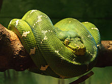
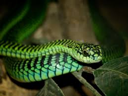
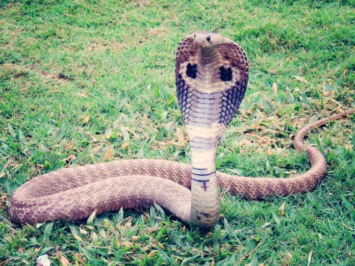
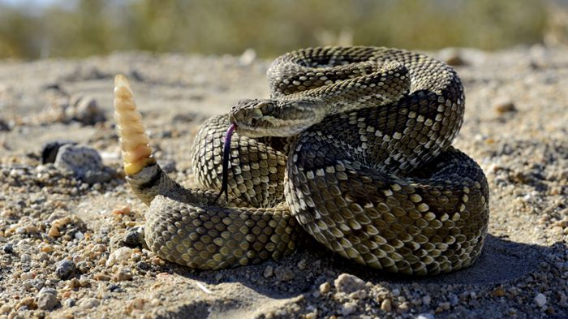

Las familias de los bóidos y de los pitónidos reúnen las especies más primitivas de serpientes, como lo prueba el hecho de que todavía conserven rudimentos de patas posteriores. Carecen de veneno y matan a sus presas por constricción, enrollándose a su alrededor hasta que se asfixian. Incluyen las serpientes actuales más voluminosas, como la anaconda y la pitón reticulada. Las pitones miden normalmente entre 1 y 6 m,aunque algunas especies están entre las serpientes más largas existentes; la pitón reticulada ostenta el récord de la serpiente más larga, con 10,32 m.
La mayoría de las serpientes vivientes pertenecen a la familia de los colúbridos, que comprende muchas especies inofensivas y de mediano tamaño como la culebra de agua europea, la culebra lisa meridional o la culebra de escalera, y algunas moderadamente venenosas, con dientes opistoglifos, como la culebra bastarda ; la culebra arborícola del Cabo es una de las pocas especies cuya mordedura puede ser mortal para el hombre.
La familia de los elápidos incluye las cobras, las serpientes de coral, las mambas y las serpientes marinas todas ellas extremadamente venenosas y potencialmente mortales para el hombre; los colmillos son pequeños y están situados en la parte delantera de la boca; su veneno tiene una acción principalmente neurotóxica. Todas las serpientes venenosas australianas pertenecen a este grupo. Los elápidos terrestres son similares a los colúbridos; casi todos tienen cuerpos largos y finos, cabezas cubiertas por grandes escamas y no siempre diferenciadas del cuello, y ojos con pupilas redondas. Además, su comportamiento es, por lo general, bastante activo, y muchas especies son ovíparas. Las mambas son arborícolas y son muy ágiles y rápidas. Las serpientes de coral poseen sus vivos colores de advertencia ya que son muy venenosas, entre los que predominan amarillo, rojo y negro; no son muy peligrosas para el hombre ya que son de pequeño tamaño y abren poco la boca, lo que hace difícil que puedan morder. Las cobras son muy conocidas por su aspecto amenazante y su mordedura; habitan en zonas tropicales y desérticas del sur de Asia y África; despliegan una especie de "capucha" en la zona de la cabeza y el cuello cuando están irritadas o en peligro, gracias a las largas costillas cervicales; es un gesto de advertencia ante un posible enemigo.
La familia de los vipéridos comprende las víboras del Viejo Mundo y los crótalos, principalmente americanos; todas ellas son muy venenosas y con dos colmillos solenoglifos provistos de un canal que actúan como agujas hipodérmicas cuando muerden para inyectar veneno. El veneno tiene una acción principalmente hemolítica. Los colmillos son muy largos y se pliegan contra el paladar cuando la boca está cerrada desplegándose rápidamente cuando la serpiente se dispone a atacar a la presa. La cabeza es triangular y ancha, y los ojos tienen la pupila vertical.Entre sus especies destacan las víboras europeas, los animales más venenosos del continente, las víboras cornudas africanas, el áspid, las víboras del Gabón, las serpientes de cascabel americanas
